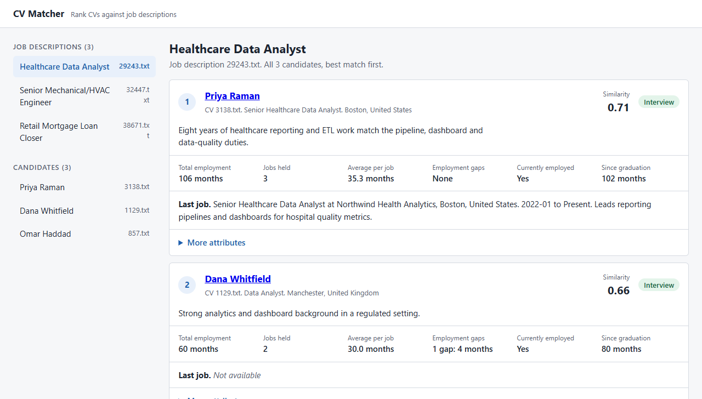
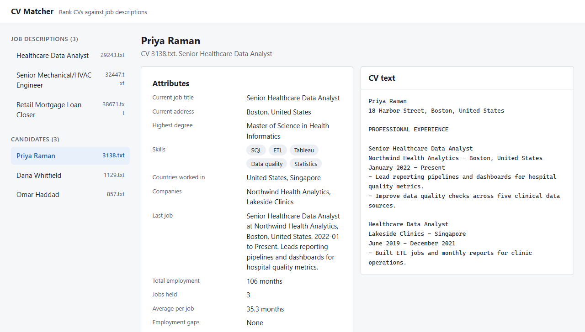

Fully AI-Assisted Coding
“It’s already happening, the romanticization of handwritten code.” DHH, Lex Fridman Podcast #501
Develop an app,
without writing a single line of code.
It is easy to build an app that looks good, fast. It is much harder to build one that survives the test of time and the natural elements. That takes systems thinking and experience in coding. The former is slop, the latter is high quality.
What does high-quality code mean?
| The classic answer, for humans | In the age of AI, why it matters |
|---|---|
| Readable: clear names, small functions | The AI reads the code to know what to change. Less to misread, fewer wrong guesses. beautiful code is easier to understand, it is simpler, it is more malleable(DHH) |
| Simple logic, no cleverness | Simple code is cheaper for the AI to work in. there is great payoff to writing systems that agents have an easier time dealing with(DHH) |
| A design that is easy to maintain and change over time | The AI changes code faster than anyone can re-read it, and every change lands on the last one. At Basecamp, each vibe-coded PR looked fine alone; together they destroyed the architecture of the system(DHH) |
| Comments where the why is not obvious | Every AI session starts with no memory. The code shows what it does; only a comment or a doc says why. |
| Systems thinking | The AI writes the part; a person holds the whole: boundaries, data flow, how the pieces fit. |
| Proper commit comments | Git tells the story. The history is the record of what changed and why, for the next person and the next AI session. |
| Tests that prove it works, and safe by default | The AI can break things quietly. A test for every requirement catches it; no secrets in git and no destructive commands limit the damage. |
Spec → Design → Plan
This is a workflow. A way of thinking. Your cockpit for coding.
Requirements with IDs. The AI can help write it, interview style.
But a human must review and approve it. This is the single most important step and the single most important quality gate. It is done by a human, not by the AI.
Architecture, data, decisions. The AI helps.
Done by a human; the AI assists. It needs senior software engineering experience.
Fully built by the AI.
Milestones with their tests, model, effort and status.
- One fact, one file
- Each fact is written in one place only. Other files point to it by ID instead of copying it.
- A finished milestone is deleted from the plan. Git history keeps the record.
- Benefit: the files can't contradict each other, and the AI reads only what is still true and still to do.
- Works by hand too
- Any AI chat, or a person with a text editor.
- The method is the documents, not the tool.
Why this workflow works
- It protects the architecture
- At Basecamp, each vibe-coded PR looked fine alone; together they
destroyed the architecture of the system
(DHH). - A human owns the spec and the design, so the AI builds inside a shape someone chose.
- At Basecamp, each vibe-coded PR looked fine alone; together they
- Human judgment goes where it counts
- Agents are diligent: they write tests and check their work when told to.
- Taste, and the experience to know which complexity will hurt in two years, stay human. The AI gets the large, easy-to-delegate part: implementation.
- Simple design pays twice
- Clean design was always cheaper to change. Now agents also work cheaper, and make fewer mistakes, in a system they can grasp.
- One fact, one file
- Plain text in the repo works for a person and for an agent. No tool or platform needed, and Git remembers the history.
- Small steps you can check
- Milestones with their own tests: you review a small diff against a stated intent. Mediocre work stacked on mediocre work turns into a ball of mud; small tested steps stop that from compounding.
- One warning: do not over-prescribe
- Keep the spec to what and why, and the design to the load-bearing decisions. An agent can be hurt by overly prescriptive instructions, and within a good frame it often knows best.
The workflow is provided as a skill
One command turns an empty folder into a project that already works this way.
A new project folder, open in VS Code.
One command. Builds everything from the golden templates.
Pushed to GitHub. Type /write-spec to start the first interview.
- What the skill sets up
- CLAUDE.md with path-scoped rules; the docs: workflow, spec, design, plan; the
/write-spec,/write-designand/write-planskills; the README. - Tool configs, hooks, the milestone runner and the starting folders.
- The first commit, the GitHub repository, the push, and a conda environment named after the project.
- CLAUDE.md with path-scoped rules; the docs: workflow, spec, design, plan; the
- Why a skill
- Every project starts with the same method and the same guardrails.
- Improve the workflow once, and every new project gets it.
- The method is a reusable asset, not something to explain again each time.
What you get from the skill
| You get | What it is | Why |
|---|---|---|
CLAUDE.md, .claude/rules/ |
The rules Claude always loads, about 190 lines, plus topic rules that load only when Claude touches a matching file. | A short file is followed more reliably, and the Python rules cost nothing while Claude edits CSS. |
docs/ |
The workflow and its documents: spec, design, plan, written with /write-spec, /write-design and /write-plan. The plan lists milestones with tests, model, effort and status. |
Claude works from these files, not from memory of past sessions. One fact, one file. |
scripts/milestones-runner.py |
Runs the open milestones in order, each in a fresh session. Stops at a blocked milestone and prints the question; you approve in the plan, commit, run again. | No session carries another’s context, and the runner stops instead of guessing. |
Hooks, scripts/check.py |
Each edit: lint and fix. Each commit: all checks and tests. | Lint errors, type errors and failing tests cannot reach the history. |
.claude/settings.json |
Permissions: routine steps allowed, risky ones ask first, destructive ones denied (force push, hard reset). | A rule here is enforced. A rule in CLAUDE.md is only advice. |
Tool configs, .gitignore, config/.env.example |
Ruff, mypy, pytest, ESLint, Prettier and Stylelint, configured. Secrets and generated files kept out of git. The list of settings. | Every project has the same layout and the same checks from the first commit. |
The standard CLAUDE.md enforces the essentials
The components of high-quality code, written into the rules of every new project.
| Essential | The rule | Why |
|---|---|---|
| Logging | Set up once, in the entry point, from settings. Plain text, one line per event: time, level, module. Never log secrets. print is blocked. |
You can see what the app did, and a failure leaves a trail. |
| Configuration | Every setting lives in config/.env (never committed) and is listed in .env.example. No URLs, paths or thresholds inline. A missing value fails clearly at startup. |
One place to change behavior, and secrets stay out of the code. |
| requirements.txt | The only list of dependencies. Direct ones only, pinned with ==. Ask before adding one. |
The same tools and versions on every machine. No surprise packages. |
| Exception handling | Catch only at an external boundary, add context and re-raise. Never swallow. The top level shows the full stack trace and stops. | Failures are loud and traceable, not hidden. |
| Testing | Every requirement has a test. Every user workflow has an end-to-end test. 80% branch coverage. A test is never weakened to make it pass. | The tests prove the app does what the spec says. |
Enforce with tools, not prompts
| Tool | Enforces |
|---|---|
| ruff · ESLint1 | Style, smells, small functions (≈20 lines, 4 parameters) |
| Prettier · Stylelint | Formatting, CSS rules |
| mypy · tsc | Strict types |
| pytest | Behavior, 80% branch coverage |
| Git hook | All of the above, on every commit |
| Permissions | No force push, no hard reset |
A prompt is advice
Probabilistic. The same prompt can give a different result each time.
- Followed most of the time.
- Costs context in every session.
- The longer it gets, the less it is followed.
A linter1 is a rule
Deterministic. The same code always gets the same verdict.
- Enforced every time.
- Costs nothing until it fails.
- Runs in under a second.
If a tool can check it, it goes in the tool's config. CLAUDE.md keeps only what no tool can check, in under 200 lines.
1 Linter: a program that reads your code without running it and flags style problems, likely bugs and code smells against a fixed set of rules. Many can also fix what they find. Examples: ruff for Python, ESLint for JavaScript.
Example: CV Matcher, from an empty folder in one day
A demo app that reads CVs and job descriptions, has an LLM extract facts, ranks the CVs by meaning (embeddings in a vector store), and recommends whom to interview. Built with this workflow, step by step.
Empty folder to a pushed repository: rules, docs, hooks, checks.
A /write-spec interview: 34 requirements with IDs, 2 worked examples. The user cut 6 to fit a one-hour build, then approved: i approve the specs
.
14 decisions: FastAPI, OpenAI, a Chroma vector store. Five UI mockups. Approved by the user, with one rule exception written down.
13 milestones, each with its tests, model and effort. milestones-runner.py ran all 13, one fresh session each.
- The build itself was short, because the documents had already settled what to build
- Thirteen milestones, about 84 minutes of AI time in total, between 20:39 and 00:34. Twelve ran on Sonnet, the pipeline on Opus.
- More than two hours of that window were spent waiting for a person (next slide).
The AI stops and asks. A human decides.
| Moment | What the AI could not decide alone | The human’s answer |
|---|---|---|
| Spec | Which requirements matter, and what is out of scope. | Cut 6 requirements to keep the build to about an hour, then approved the whole spec. |
| Design | A failed LLM call must not hide the other results (ERR-002), but the rules say never to catch an error in order to continue. | Approved one deliberate exception (DEC-008), written in the design. The alternative was to withdraw ERR-002. |
| M7 blocked 21:26 |
The milestone needs FastAPI installed. An unattended run may not install packages. | Approved the install in plan.md at 23:33. The runner continued; M7 took 2 minutes. |
| M11 blocked 23:54 |
The lint config rejects the CSS class names the rules require, and points at the wrong file paths. Editing it needs approval. | Chose option 2 of 2: hyphenated class names, docs updated, ESLint paths fixed. Committed at 00:09; the runner then finished M11 to M13 in 23 minutes. |
Both times the AI took no shortcut: no lint-disable comment, no workaround for the refused install. It stopped, wrote the exact question into the plan, and waited.
What it produced: a complete, tested app


Screens from the real front end, served with sample data standing in for the LLM results. Every check passes: ruff, mypy, pytest, ESLint, Stylelint, Prettier and tsc. The one step no automated test covers is a run against the real OpenAI service. That check is the user’s.
Will the software be bug-free?
No. What do we do then?